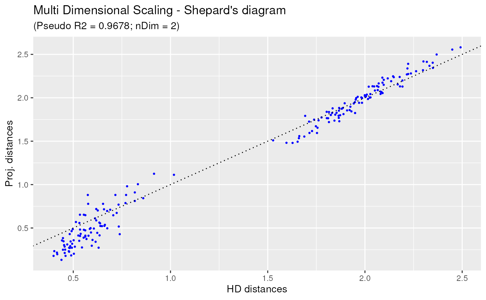
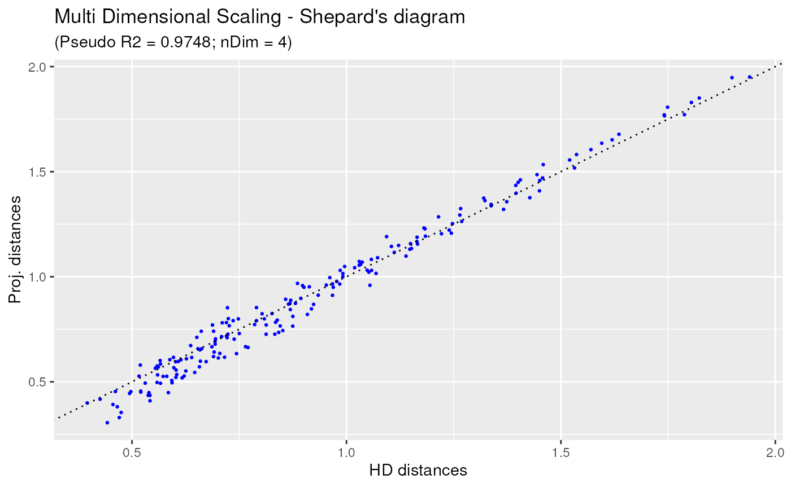
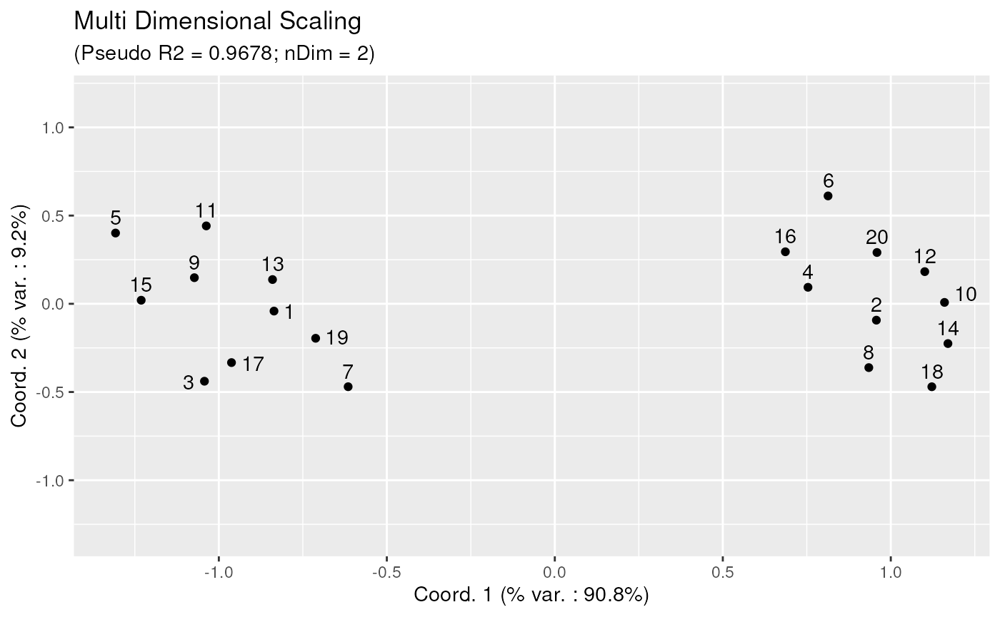

Low Dimensional Projection of Cytometry Samples
Philippe Hauchamps
Laurent Gatto
Source:vignettes/CytoMDS.Rmd
CytoMDS.RmdAbstract
This vignette describes the functionality implemented in the
CytoMDS package. CytoMDS provides
support for low dimensional projection of a set of cytometry
samples, using concepts such as Earth Mover’s (EMD) distance, and
Multi Dimensional Scaling (MDS). This vignette is distributed
under a CC BY-SA 4.0 license.
Installation
To install this package, start R and enter (uncommented):
# if (!require("BiocManager", quietly = TRUE))
# install.packages("BiocManager")
#
# BiocManager::install("CytoMDS")Loading dependent packages for the present vignette…
Introduction
What is CytoMDS in a few words
Mathematical ingredients
Present OMIP021 dataset - see CytoPipeline vignette.
We start from transformed data…
data(OMIP021Samples)
#outputDir <- base::tempdir()
transList <- estimateScaleTransforms(
ff = OMIP021Samples[[1]],
fluoMethod = "estimateLogicle",
scatterMethod = "linearQuantile",
scatterRefMarker = "BV785 - CD3")## estimating logicle transformations for fluorochrome channels...## Estimating linear transformation for scatter channels : reference marker = BV785 - CD3...## applying specific linear transformation for FSC-A channel...## initial quantiles : q5 = 10464.0482 ; q95 = 192509.607## target quantiles : q5 = 0.3849 ; q95 = 2.9395## a = 1.40e-05 ; b = 2.38e-01## applying FSC-A linear transformation for FSC-H channel...## applying specific linear transformation for SSC-A channel...## initial quantiles : q5 = 16345.6462 ; q95 = 245485.3555## target quantiles : q5 = 0.3849 ; q95 = 2.9395## a = 1.11e-05 ; b = 2.03e-01## applying SSC-A linear transformation for SSC-H channel...
OMIP021Trans <- CytoPipeline::applyScaleTransforms(
OMIP021Samples,
transList)Simulated datasets
We now simulate 2 datasets by combining events from the two Donor samples of the OMIP021 original dataset.
Dataset1 is built by subsampling 5 times from each of the two original donor samples (alternatively)
Dataset2 is built by mixing sample 1 and sample 2 with weights varying from 0 to 1
nSample <- 20
ffList <- list()
for (i in seq_len(nSample)) {
ffList[[i]] <- CytoPipeline::subsample(
OMIP021Trans[[(i+1)%%2+1]],
nEvents = 1000,
seed = i)[,1:22]
}
OMIP021Sim1 <- as(ffList, "flowSet")
pData1 <- data.frame(name = paste0("S", seq_len(nSample)),
clust = rep(c(1,2), 5))
nSample <- 20
ffList <- list()
for (i in seq_len(nSample)) {
if (i==1) {
ffList[[i]] <- OMIP021Trans[[1]]
} else if (i==nSample) {
ffList[[i]] <- OMIP021Trans[[2]]
} else {
ff1 <- CytoPipeline::subsample(
OMIP021Trans[[1]],
nEvents = 1000 * (nSample-i)/(nSample-1),
seed = i)[,1:22]
ff2 <- CytoPipeline::subsample(
OMIP021Trans[[2]],
nEvents = 1000 * (i-1)/(nSample-1)
)
ffList[[i]] <- CytoPipeline::aggregateAndSample(
flowCore::flowSet(ff1, ff2),
nTotalEvents = 1000000 # big number to have a simple aggregation
)[,1:22]
}
}
OMIP021Sim2 <- as(ffList, "flowSet")
pData2 <- data.frame(name = paste0("S", seq_len(nSample)),
origin = c("Raw", rep("Sim", nSample-2), "Raw"),
rawLabel = c("D1", rep("", nSample-2), "D2"))calculating distances between samples
pwDist1 <- pairwiseEMDDist(
OMIP021Sim1, verbose = FALSE)
pwDist2 <- pairwiseEMDDist(
OMIP021Sim2, verbose = FALSE)
#round(pwDist1, 2)
distVec1 <- pwDist1[upper.tri(pwDist1)]
distVecDF1 <- data.frame(dist = distVec1)
ggplot(distVecDF1, mapping = aes(x=dist)) +
geom_histogram(fill = "darkgrey", col = "black", bins = 15) +
theme_bw()
#round(pwDist2, 2)
distVec2 <- pwDist2[upper.tri(pwDist2)]
distVecDF2 <- data.frame(dist = distVec2)
ggplot(distVecDF2, mapping = aes(x=dist)) +
geom_histogram(bins = 15, fill = "darkgrey", col = "black") +
theme_bw()
calculating MDS projection
mdsObj1 <- CytoMDS::computeMetricMDS(pwDist1)## Warning in rgl.init(initValue, onlyNULL): RGL: unable to open X11 display## Warning: 'rgl.init' failed, running with 'rgl.useNULL = TRUE'.
ggplotSampleMDSShepard(mdsObj1)
example 2: nDim = 4. Imposing nDim = 2, targetPseudoRSquare = 0.99
mdsObj2 <- CytoMDS::computeMetricMDS(pwDist2)
ggplotSampleMDSShepard(mdsObj2) # plotting mds projection
ggplotSampleMDS(mdsObj1, pDataForLabel = "sampleId")
Session information
## R Under development (unstable) (2024-01-23 r85822)
## Platform: x86_64-pc-linux-gnu
## Running under: Ubuntu 22.04.3 LTS
##
## Matrix products: default
## BLAS: /usr/lib/x86_64-linux-gnu/openblas-pthread/libblas.so.3
## LAPACK: /usr/lib/x86_64-linux-gnu/openblas-pthread/libopenblasp-r0.3.20.so; LAPACK version 3.10.0
##
## locale:
## [1] LC_CTYPE=en_US.UTF-8 LC_NUMERIC=C
## [3] LC_TIME=en_US.UTF-8 LC_COLLATE=en_US.UTF-8
## [5] LC_MONETARY=en_US.UTF-8 LC_MESSAGES=en_US.UTF-8
## [7] LC_PAPER=en_US.UTF-8 LC_NAME=C
## [9] LC_ADDRESS=C LC_TELEPHONE=C
## [11] LC_MEASUREMENT=en_US.UTF-8 LC_IDENTIFICATION=C
##
## time zone: UTC
## tzcode source: system (glibc)
##
## attached base packages:
## [1] stats graphics grDevices utils datasets methods base
##
## other attached packages:
## [1] ggplot2_3.4.4 CytoMDS_0.99.8 CytoPipeline_1.3.0 BiocStyle_2.31.0
##
## loaded via a namespace (and not attached):
## [1] RColorBrewer_1.1-3 rstudioapi_0.15.0 jsonlite_1.8.8
## [4] shape_1.4.6 magrittr_2.0.3 jomo_2.7-6
## [7] farver_2.1.1 nloptr_2.0.3 rmarkdown_2.25
## [10] fs_1.6.3 zlibbioc_1.49.0 ragg_1.2.7
## [13] vctrs_0.6.5 memoise_2.0.1 minqa_1.2.6
## [16] heplots_1.6.0 base64enc_0.1-3 htmltools_0.5.7
## [19] polynom_1.4-1 plotrix_3.8-4 weights_1.0.4
## [22] broom_1.0.5 Formula_1.2-5 mitml_0.4-5
## [25] sass_0.4.8 pracma_2.4.4 bslib_0.6.1
## [28] htmlwidgets_1.6.4 desc_1.4.3 plyr_1.8.9
## [31] cachem_1.0.8 lifecycle_1.0.4 iterators_1.0.14
## [34] pkgconfig_2.0.3 Matrix_1.6-5 R6_2.5.1
## [37] fastmap_1.1.1 digest_0.6.34 colorspace_2.1-0
## [40] S4Vectors_0.41.3 textshaping_0.3.7 Hmisc_5.1-1
## [43] ellipse_0.5.0 labeling_0.4.3 cytolib_2.15.2
## [46] fansi_1.0.6 nnls_1.5 gdata_3.0.0
## [49] abind_1.4-5 compiler_4.4.0 proxy_0.4-27
## [52] withr_3.0.0 doParallel_1.0.17 htmlTable_2.4.2
## [55] backports_1.4.1 carData_3.0-5 hexbin_1.28.3
## [58] highr_0.10 pan_1.9 MASS_7.3-60.2
## [61] gtools_3.9.5 tools_4.4.0 foreign_0.8-86
## [64] nnet_7.3-19 glue_1.7.0 nlme_3.1-164
## [67] grid_4.4.0 checkmate_2.3.1 cluster_2.1.6
## [70] generics_0.1.3 gtable_0.3.4 class_7.3-22
## [73] tidyr_1.3.1 data.table_1.14.10 car_3.1-2
## [76] utf8_1.2.4 BiocGenerics_0.49.1 ggrepel_0.9.5
## [79] foreach_1.5.2 pillar_1.9.0 stringr_1.5.1
## [82] splines_4.4.0 flowCore_2.15.2 dplyr_1.1.4
## [85] smacof_2.1-5 lattice_0.22-5 survival_3.5-7
## [88] RProtoBufLib_2.15.0 tidyselect_1.2.0 ggcyto_1.31.1
## [91] transport_0.14-6 knitr_1.45 gridExtra_2.3
## [94] bookdown_0.37 flowWorkspace_4.15.4 stats4_4.4.0
## [97] xfun_0.41 Biobase_2.63.0 matrixStats_1.2.0
## [100] stringi_1.8.3 ncdfFlow_2.49.0 yaml_2.3.8
## [103] boot_1.3-28.1 evaluate_0.23 codetools_0.2-19
## [106] wordcloud_2.6 tibble_3.2.1 Rgraphviz_2.47.0
## [109] BiocManager_1.30.22 graph_1.81.0 cli_3.6.2
## [112] rpart_4.1.23 systemfonts_1.0.5 munsell_0.5.0
## [115] jquerylib_0.1.4 candisc_0.8-6 Rcpp_1.0.12
## [118] XML_3.99-0.16.1 parallel_4.4.0 pkgdown_2.0.7.9000
## [121] rgl_1.2.8 lme4_1.1-35.1 glmnet_4.1-8
## [124] scales_1.3.0 e1071_1.7-14 purrr_1.0.2
## [127] rlang_1.1.3 mice_3.16.0